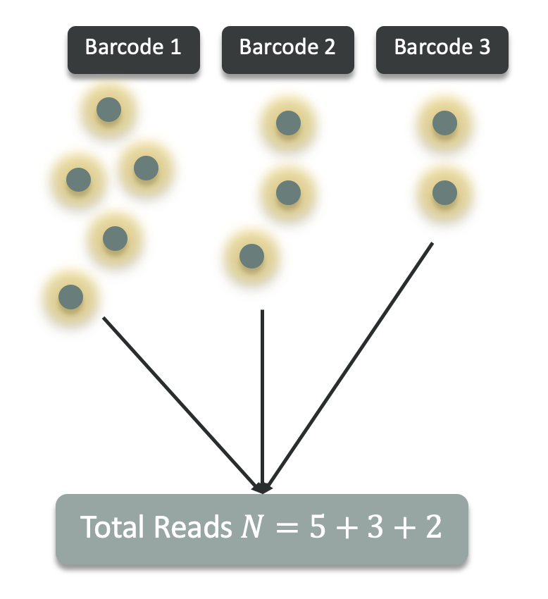
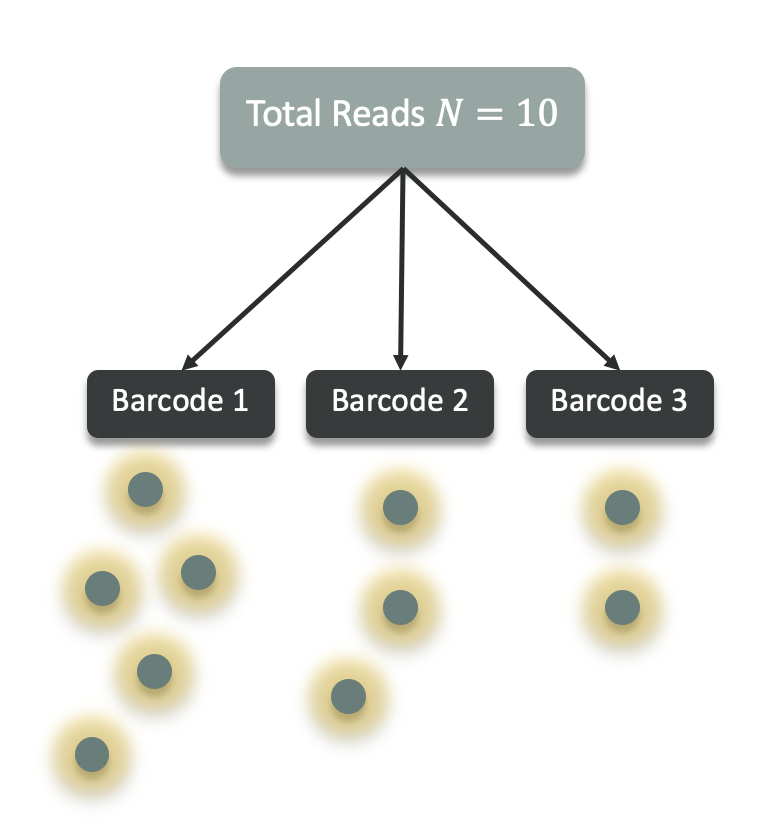
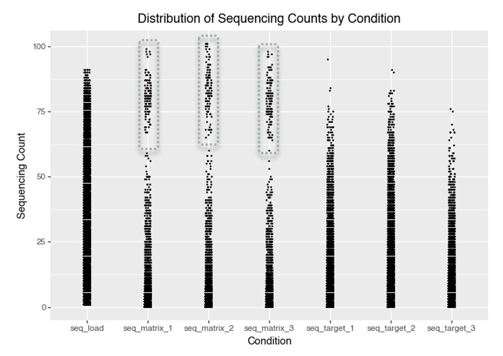
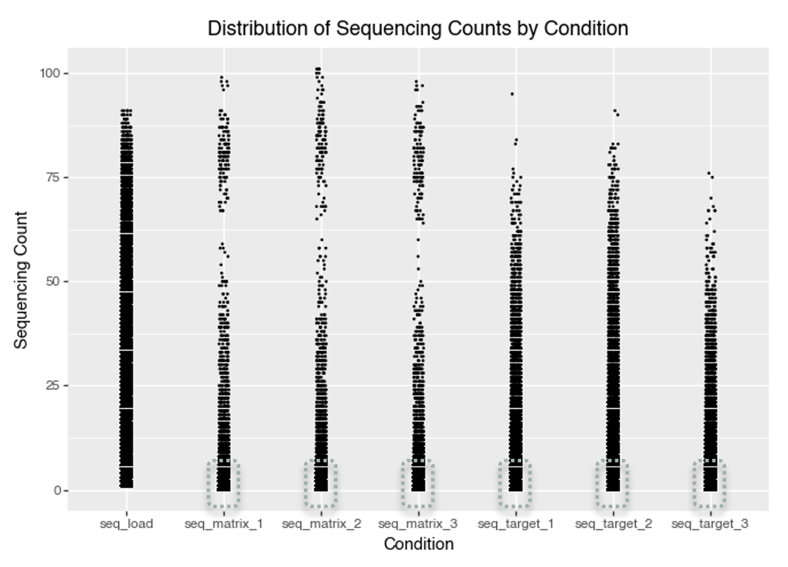
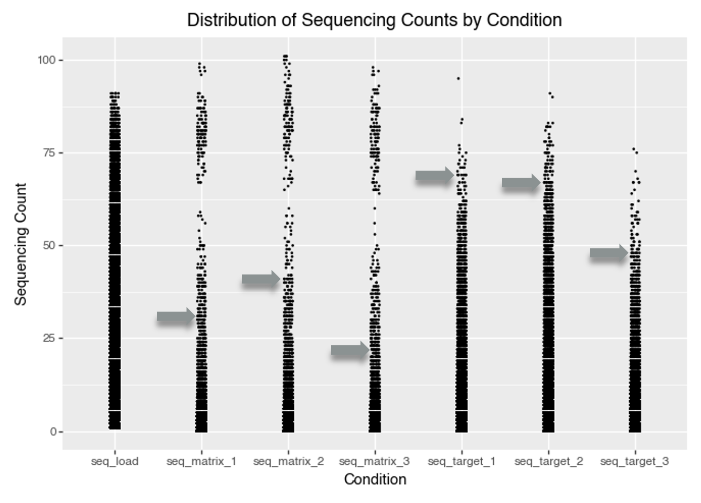
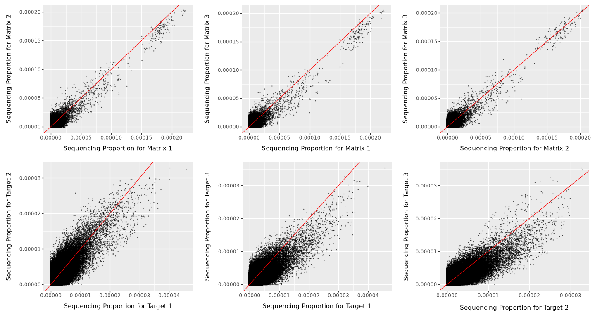
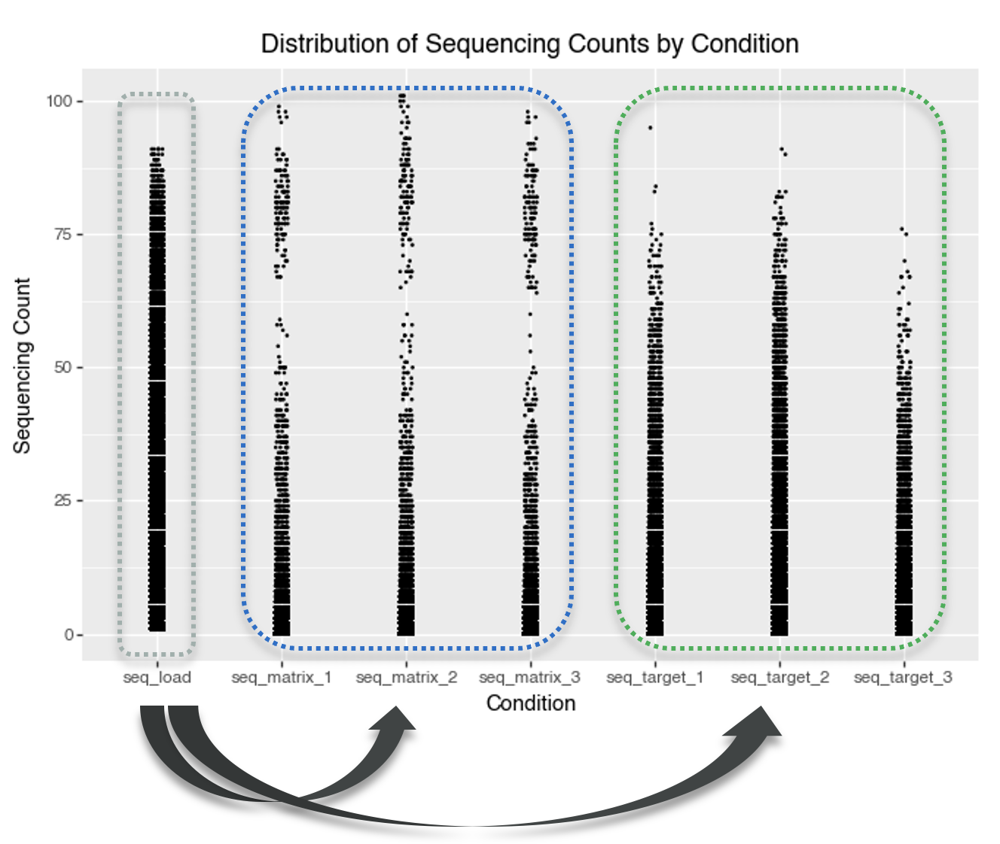
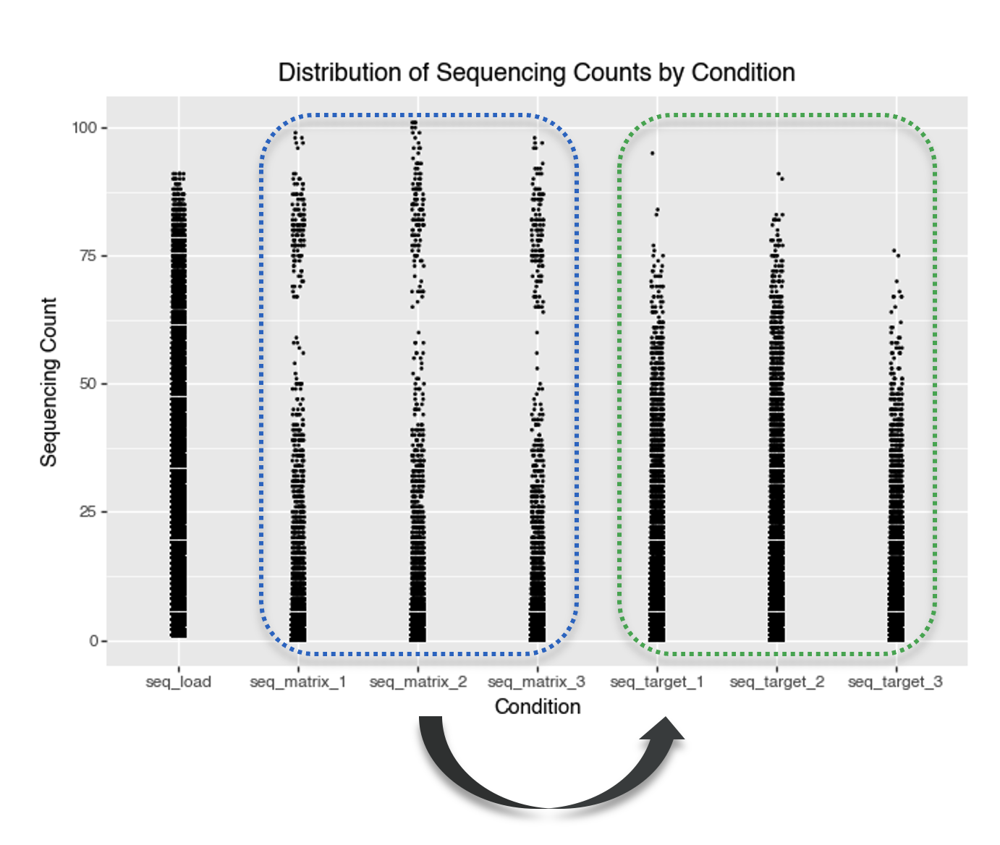

Code
import warnings
warnings.filterwarnings("ignore", module="plotnine")
import pandas as pd
import numpy as np
import seaborn as sns
import matplotlib.pyplot as plt
import plotnine as ggThis blog aims to design and build an attachment-aware, synthon-level GNN for DNA-encoded library (DEL) data, extending compositional models like DEL-Compose by explicitly encoding where each synthon attaches, rather than treating synthons as context-free fragments.
DNA encoded libraries (DELs) are large collections of small molecules, each tagged with a unique DNA barcode that records its synthetic history. They enable high throughput screening by pooling and sequencing to identify binders to a target. Watch this short video that explains DELs in a nutshell.
A DEL experiment involves several key stochastic steps that directly impact the statistical modeling of observed counts:
Thus, the observed DEL counts for each barcode are the outcome of a sequence of random processes, with amplification especially contributing to count heterogeneity.
It is useful to separate DEL count models by the data-generation assumption they make about sequencing depth.
1) Independent-barcode (rate-based) generation

Figure 1: Independent-barcode generation: each barcode generates counts independently; totals add up.
2) Fixed-depth (composition-based) generation
A sample has a fixed total read depth N, and each read is assigned to exactly one barcode.
Barcodes therefore share a single pool of reads, inducing weak negative dependence between barcode counts.
This perspective naturally motivates Multinomial and Dirichlet–multinomial, and the one-barcode marginal Binomial/Beta–binomial.

Figure 2: Fixed-depth generation: a fixed total N is split across barcodes that share one pool.
The likelihoods below are grouped with this distinction in mind.
Below are common likelihood choices for DEL count data. In practice, DEL data are often overdispersed (variance > mean) due to PCR/amplification and other multiplicative factors, and may also exhibit excess zeros (true absence, synthesis failures, or aggressive filtering).
\[ X_i \sim \text{Poisson}(\lambda_i) \]
Because sequencing counts in DEL experiments arise from random sampling of amplified DNA molecules, the sequencing step can be modeled using a Poisson distribution.
References:
\[ X_i \mid \lambda_i \sim \text{Poisson}(\lambda_i), \qquad \lambda_i \sim \text{Gamma}(\alpha, \beta) \]
or
\[ X_i \sim \text{NB}(\mu_i, \phi) \]
Because DEL sequencing readouts often exhibit overdispersion due to amplification and selection variability, barcode counts can be modeled using a Negative Binomial distribution.
References:
\[ X_i \sim \text{ZIP}(\lambda_i, \pi_i) \]
or
\[ X_i \sim \text{ZINB}(\mu_i, \phi, \pi_i) \]
Which assumes that there are two mechanisms that produce zeros:
\[ X_i = 0 \quad \text{with probability } \pi_i \]
and
\[ X_i \sim \text{Poisson}(\lambda_i) \quad \text{with probability } 1 - \pi_i \quad \text{(for ZIP)} \]
or
\[ X_i \sim \text{NB}(\mu_i, \phi) \quad \text{with probability } 1 - \pi_i \quad \text{(for ZINB)} \]
In ZIP/ZINB, with probability \(\pi_i\) an observation is a structural zero (e.g., true absence or synthesis failure), and otherwise counts follow Poisson or Negative Binomial. In DEL data, structural absence is rarely observed directly, so zero inflation often reflects dropouts or technical noise; it can improve fit, but overdispersed Negative Binomial models are often sufficient, so zero inflation should be a diagnostic-driven choice, not a default.
References:
In the Negative Binomial model, the rate parameter is assumed to vary according to a gamma distribution. In contrast, the Poisson-Lognormal model assumes that the logarithm of the rate parameter follows a normal (lognormal) distribution.
\[ X_i \mid \lambda_i \sim \text{Poisson}(\lambda_i), \qquad \lambda_i \sim \text{Lognormal}(\mu_i, \sigma^2) \]
A lognormal model for the rate has heavier tails than a gamma model, so it tends to fit DEL data better when a small number of barcodes show very large enrichment.
References:
If we model counts conditional on a fixed total read depth (library size) in a sample:
\[ \mathbf{X} \sim \text{Multinomial}(N, \mathbf{p}) \]
with \(N\) being the total read depth \((N = \sum_{i=1}^K X_i)\), where \(K\) is the number of barcodes, and \(\mathbf{p}\) being the vector of proportions of each barcode \((p_i = X_i / N)\).
A more overdispersed alternative is Dirichlet-multinomial.
\[ \mathbf{X} \mid \mathbf{p} \sim \text{Multinomial}(N, \mathbf{p}), \qquad \mathbf{p} \sim \text{Dirichlet}(\alpha) \]
References:
When modeling a single barcode’s counts conditional on fixed total read depth \(N\), we can treat the number of reads assigned to barcode \(i\) as the marginal of a multinomial model:
\[ \mathbf{X} \sim \text{Multinomial}(N,\mathbf{p}) \quad \Rightarrow \quad X_i \sim \text{Binomial}(N,p_i) \]
with \(p_i\) the true proportion of barcode \(i\) in the pool. Binomial assumes a fixed probability per read and variance \(N p_i(1-p_i)\), which can be too narrow when enrichment probabilities vary across experiments, PCR amplification, or selection noise.
A more overdispersed alternative is the Beta-binomial.
References:
\[ X_i \sim \text{BetaBinomial}(N, a_i, b_i) \]
Let’s start with some DEL data. We are using the data from KinDEL paper. You can learn more about this resource, here and access the data, here.
In short, KinDEL is one of the first large, publicly available DNA-Encoded Library (DEL) datasets created specifically to support machine-learning research in drug discovery. The resource contains approximately 81 million small molecules screened against the two kinases targets (MAPK14 and DDR1), with accompanying benchmark tasks aimed at predictive hit identification and DEL denoising. Beyond raw count data, KinDEL also includes replicate experiments and biophysical validation data (on-DNA and off-DNA assays), making it useful for studying how well models recover true binding signals from noisy DEL measurements.
We load only a subsection of the data to keep the example simple and fast to run. In particular, we are loading the data for the DDR1 target, and the first split of the data.
import warnings
warnings.filterwarnings("ignore", module="plotnine")
import pandas as pd
import numpy as np
import seaborn as sns
import matplotlib.pyplot as plt
import plotnine as ggdata = pd.read_parquet("data/df_train_ddr1_split1_random.parquet")
data.head()| smiles | molecule_hash | smiles_a | smiles_b | smiles_c | seq_target_1 | seq_target_2 | seq_target_3 | seq_matrix_1 | seq_matrix_2 | seq_matrix_3 | seq_load | y | |
|---|---|---|---|---|---|---|---|---|---|---|---|---|---|
| 0 | CNC(=O)[C@H](CNC(=O)c1ccccc1CNC(=O)c1ccc(-c2no... | 33531ebf0be8ba2787e85a03221df1b41a0512eaf09b1a... | CNC(=O)[C@H](CN)NC(=O)c1ccc2[nH]ccc2c1 | CC1=NC(=NO1)C1=CC=C(C=C1)C(O)=O | OC(=O)c1ccccc1CNC(=O)OCC1c2ccccc2-c2ccccc12 | 1.0 | 6.0 | 2.0 | 0.0 | 4.0 | 1.0 | 19 | 0.352696 |
| 1 | CNC(=O)[C@H](CCc1ccccc1)NC(=O)CN1C(=O)[C@@H](N... | 519cddc9ad4ab8538ced2bcfbb17e034240c68b9cd52c4... | CNC(=O)[C@@H](N)CCc1ccccc1 | OC(=O)CC1=CC(Cl)=C(O)C=C1 | OC(=O)CN1c2ccccc2OC[C@H](NC(=O)OCC2c3ccccc3-c3... | 5.0 | 9.0 | 7.0 | 1.0 | 1.0 | 1.0 | 12 | 1.482711 |
| 2 | CNC(=O)c1sc(C2CCN(C(=O)[C@H](CC3CCCCC3)NCc3csc... | d385e4289ecf6fcce902738ee8ea9ab32c43c31107cc9c... | CNC(=O)c1sc(C2CCNCC2)nc1C | BrC1=NC(C=O)=CS1 | OC(=O)[C@H](CC1CCCCC1)NC(=O)OCC1c2ccccc2-c2ccc... | 1.0 | 2.0 | 2.0 | 0.0 | 0.0 | 0.0 | 7 | 0.440103 |
| 3 | CNC(=O)c1cccc(CNC(=O)[C@H](CC2CCCCC2)NC(=O)c2c... | 96075c4092ecbba0786c42c576606e70b25d72bcccdc82... | CNC(=O)c1cccc(CN)c1 | CN(C)C1=CC=CC(=C1)C(O)=O | OC(=O)[C@H](CC1CCCCC1)NC(=O)OCC1c2ccccc2-c2ccc... | 2.0 | 2.0 | 4.0 | 1.0 | 3.0 | 0.0 | 19 | 0.337236 |
| 4 | CNC(=O)[C@@H](CNC(=O)C1CN(C(=O)CCOC)CCO1)NC(=O... | dbb42a3997dd44957450af19bb6a4f4f1ffbdef0beafe4... | CNC(=O)[C@@H](CN)NC(=O)c1cccnc1 | COCCC(O)=O | OC(=O)C1CN(CCO1)C(=O)OCC1c2ccccc2-c2ccccc12 | 4.0 | 1.0 | 2.0 | 1.0 | 2.0 | 0.0 | 26 | 0.321008 |
The columns are:
smiles: Canonical SMILES string for the fully assembled DEL molecule (the tri‑synthon product).molecule_hash: Stable identifier/hash for the assembled molecule (useful for joins and de‑duplication).smiles_a: SMILES for the synthon/fragment at attachment site A (cycle/position A).smiles_b: SMILES for the synthon/fragment at attachment site B (cycle/position B).smiles_c: SMILES for the synthon/fragment at attachment site C (cycle/position C).seq_target_1: Sequencing count for target selection replicate 1 (number of unique DNA sequences observed for this molecule after selection against the protein target).seq_target_2: Sequencing count for target selection replicate 2.seq_target_3: Sequencing count for target selection replicate 3.seq_matrix_1: Sequencing count for the negative control / matrix replicate 1 (selection without protein target).seq_matrix_2: Sequencing count for the negative control / matrix replicate 2.seq_matrix_3: Sequencing count for the negative control / matrix replicate 3.seq_load: Pre‑selection sequencing count (rough estimate of each molecule’s abundance in the library prior to selection).y: Training label used in KinDEL’s benchmarks; in the released 1M training subsets this column is the dataset’s target_enrichment value (a Poisson‑enrichment score comparing target vs control/matrix across replicates).Let’s start with some Exploratory Data Analysis (EDA) to understand the data. We start by plotting counts by condition.
data_seq_counts = data.melt(id_vars=['molecule_hash'], value_vars=['seq_target_1', 'seq_target_2', 'seq_target_3', 'seq_matrix_1', 'seq_matrix_2', 'seq_matrix_3', 'seq_load'], value_name='seq_count', var_name='condition')
p = (
gg.ggplot(data_seq_counts, gg.aes(x = 'condition', y='seq_count'))
+ gg.geom_jitter(width=0.05, height=0, size=0.1)
+ gg.labs(x='Condition', y='Sequencing Count', title='Distribution of Sequencing Counts by Condition')
)
p.save("img/kindel_eda_seq_counts.png")
p.show()
Figure 3: Distribution of counts by condition for KinDEL train ddr1_split1_random dataset.
A key observation from the plot is that some compounds have very high sequencing counts in the matrix (control) conditions. The distribution of matrix counts appears bimodal. This suggests that some molecules may bind strongly to the matrix itself, not just the intended protein target. Such molecules could give high signals in both the target and matrix conditions, making it challenging to tell if they’re true protein binders or simply show nonspecific, matrix-binding effects.

Figure 4: Matrix binders. Molecules with high sequencing counts in matrix (control) conditions. These molecules can confound analysis by mimicking protein hits.
A high density region near low counts suggests that most molecules have very low sequencing counts. This is typical for DEL data where most barcodes are rare or absent in a given selection. Indicates a sparse count structure consistent with large library size and small per-barcode probabilities.

Figure 5: Most molecules have very low counts, indicating sparse DEL data.
A better way to visualize this is to plot the cumulative distribution function (CDF) of the sequencing counts.
# Plot ECDF faceted by condition, and add vertical line at the 85% quantile for each
seq_conditions = [
'seq_target_1', 'seq_target_2', 'seq_target_3',
'seq_matrix_1', 'seq_matrix_2', 'seq_matrix_3'
]
# Melt data for plotnine
data_ecdf = data.melt(
id_vars=['molecule_hash'],
value_vars=seq_conditions,
var_name='condition',
value_name='seq_count'
)
# Compute the 85th percentile (quantile) for each condition
ecdf_thresholds = (
data_ecdf.groupby('condition')['seq_count']
.quantile(0.85)
.reset_index()
.rename(columns={'seq_count': 'quantile_85'})
)
# Merge quantiles back for vertical line drawing
# (not strictly necessary, just for convenience)
data_ecdf = data_ecdf.merge(ecdf_thresholds, on='condition', how='left')
# Prepare dataframe for vertical lines
vline_data = ecdf_thresholds.copy()
vline_data['y_start'] = 0
vline_data['y_end'] = 0.85
ecdf_plot = (
gg.ggplot(data_ecdf, gg.aes(x='seq_count'))
+ gg.stat_ecdf(size=1)
+ gg.geom_vline(
data=vline_data,
mapping=gg.aes(xintercept='quantile_85'),
linetype="dashed", color="red"
)
+ gg.geom_label(
data=vline_data.assign(y_pos=0.5),
mapping=gg.aes(
x='quantile_85',
y='y_pos',
label='round(quantile_85, 1)'
),
color="red",
fill="white",
size=11,
ha='left',
va='center',
nudge_x=1,
label_padding=0.4,
format_string="{:.0f}"
)
+ gg.facet_wrap('~condition', scales='free')
+ gg.labs(
x='Sequencing Count',
y='Cumulative Probability',
title='ECDF of Sequencing Counts by Condition (with 85% Quantile)'
)
+ gg.theme_bw()
+ gg.theme(strip_text=gg.element_text(size=11))
)
ecdf_plot.save("img/kindel_ecdf_by_condition.png")
ecdf_plot.show()
Figure 6: Cumulative distribution function (CDF) of the sequencing counts for all conditions with 85% quantile.
The ECDF indicates that most molecules have very low sequencing counts, and the patterns differ between the matrix and target selections. This difference reflects the distinct biological and technical contexts of each selection method.
For the matrix selection, the distribution mirrors the composition of the input library, highlighting that only a small subset of molecules bind to the matrix, which is a desirable outcome, indicating limited non-specific binding.
In contrast, the target selection distribution shows higher counts at the 85th percentile, demonstrating that the target protein enriches for specific compounds. This suggests successful binding or functional selection of molecules by the target protein.
The appearance of discrete horizontal bands in the plot reflects the presence of repeated, identical sequencing count values across many molecules. This arises because next-generation sequencing produces integer counts and there are only so many ways that low-abundance molecules can be sampled and counted from a large pool. Especially at lower count levels, a substantial number of molecules will have the same sequencing count (for example, many may have a count of “1”, “2”, and so on), resulting in “steps” in the ECDF plot (Figure 6) or pronounced horizontal bands (Figure 7). This effect is further amplified when the sequencing depth is modest relative to the library complexity, or when many molecules are present at similar low abundance.

Figure 7: Discrete horizontal bands. The plot shows how discrete, integer sequencing counts lead to repeated identical values among molecules, appearing as horizontal bands in the ECDF.
Let’s plot the frequency of each sequencing count value (\(\leq 20\)) for all conditions. This directly shows why the bands appear: thousands of molecules share the same low integer count.
# Using the already-melted data_ecdf from earlier
count_of_counts = (
data_ecdf
.groupby(['condition', 'seq_count'])
.size()
.reset_index(name='n_molecules')
)
# Truncate at, say, count=20 for visibility
count_of_counts_trunc = count_of_counts[count_of_counts['seq_count'] <= 20]
frequency_of_counts_plot = (
gg.ggplot(count_of_counts_trunc, gg.aes(x='factor(seq_count)', y='n_molecules'))
+ gg.geom_col(fill='steelblue', width=0.7)
+ gg.facet_wrap('~condition', scales='free_y')
+ gg.labs(
x='Sequencing Count',
y='Number of Molecules',
title='Frequency of Each Sequencing Count Value (≤ 20)'
)
+ gg.theme_bw()
+ gg.theme(axis_text_x=gg.element_text(size=8, rotation=90), figure_size=(15, 4))
)
frequency_of_counts_plot.save("img/kindel_frequency_of_counts.png")
frequency_of_counts_plot.show()
Figure 8: Frequency of each sequencing count value (\(\leq 20\)) for all conditions.
Figure 8 confirms that low integer counts dominate across conditions: counts such as 0, 1, 2, and 3 occur for very large numbers of molecules, while higher counts are much rarer. This pile-up at a few small integer values is what produces the visible step-like ECDF behavior and discrete horizontal bands seen in the earlier plots.
Each experimental selection (both matrix and target) was performed in three independent replicates:

Figure 9: Each experimental selection (both matrix and target) was performed in three independent replicates.
To assess reproducibility, we compare replicate-level sequencing proportions for both matrix and target selections. For each replicate, molecule counts are normalized by the replicate total, then compared pairwise. We use two complementary views: scatter plots (Figure 10) for pattern shape and deviation from the \(y=x\) line, and a Spearman correlation heatmap (Figure 11) for a compact quantitative summary of pairwise agreement.
data_seq_counts_matrix = data[['seq_matrix_1', 'seq_matrix_2', 'seq_matrix_3']]
# compute the proportion of the sequencing counts for the matrix conditions
data_seq_counts_matrix['seq_matrix_1_prop'] = data_seq_counts_matrix['seq_matrix_1'] / data_seq_counts_matrix['seq_matrix_1'].sum()
data_seq_counts_matrix['seq_matrix_2_prop'] = data_seq_counts_matrix['seq_matrix_2'] / data_seq_counts_matrix['seq_matrix_2'].sum()
data_seq_counts_matrix['seq_matrix_3_prop'] = data_seq_counts_matrix['seq_matrix_3'] / data_seq_counts_matrix['seq_matrix_3'].sum()
data_seq_counts_target = data[['seq_target_1', 'seq_target_2', 'seq_target_3']]
# compute the proportion of the sequencing counts for the target conditions
data_seq_counts_target['seq_target_1_prop'] = data_seq_counts_target['seq_target_1'] / data_seq_counts_target['seq_target_1'].sum()
data_seq_counts_target['seq_target_2_prop'] = data_seq_counts_target['seq_target_2'] / data_seq_counts_target['seq_target_2'].sum()
data_seq_counts_target['seq_target_3_prop'] = data_seq_counts_target['seq_target_3'] / data_seq_counts_target['seq_target_3'].sum()
p_1 =(
gg.ggplot(data_seq_counts_matrix, gg.aes(x = 'seq_matrix_1_prop', y='seq_matrix_2_prop'))
+ gg.geom_point(position='jitter', size=0.1, alpha=0.5)
+ gg.geom_abline(slope=1, intercept=0, color='red')
+ gg.labs(x='Sequencing Proportion for Matrix 1', y='Sequencing Proportion for Matrix 2')
)
p_2 = (
gg.ggplot(data_seq_counts_matrix, gg.aes(x = 'seq_matrix_1_prop', y='seq_matrix_3_prop'))
+ gg.geom_point(position='jitter', size=0.1, alpha=0.5)
+ gg.geom_abline(slope=1, intercept=0, color='red')
+ gg.labs(x='Sequencing Proportion for Matrix 1', y='Sequencing Proportion for Matrix 3')
)
p_3 = (
gg.ggplot(data_seq_counts_matrix, gg.aes(x = 'seq_matrix_2_prop', y='seq_matrix_3_prop'))
+ gg.geom_point(position='jitter', size=0.1, alpha=0.5)
+ gg.geom_abline(slope=1, intercept=0, color='red')
+ gg.labs(x='Sequencing Proportion for Matrix 2', y='Sequencing Proportion for Matrix 3')
)
p_4 =(
gg.ggplot(data_seq_counts_target, gg.aes(x = 'seq_target_1_prop', y='seq_target_2_prop'))
+ gg.geom_point(position='jitter', size=0.1, alpha=0.5)
+ gg.geom_abline(slope=1, intercept=0, color='red')
+ gg.labs(x='Sequencing Proportion for Target 1', y='Sequencing Proportion for Target 2')
)
p_5 = (
gg.ggplot(data_seq_counts_target, gg.aes(x = 'seq_target_1_prop', y='seq_target_3_prop'))
+ gg.geom_point(position='jitter', size=0.1, alpha=0.5)
+ gg.geom_abline(slope=1, intercept=0, color='red')
+ gg.labs(x='Sequencing Proportion for Target 1', y='Sequencing Proportion for Target 3')
)
p_6 = (
gg.ggplot(data_seq_counts_target, gg.aes(x = 'seq_target_2_prop', y='seq_target_3_prop'))
+ gg.geom_point(position='jitter', size=0.1, alpha=0.5)
+ gg.geom_abline(slope=1, intercept=0, color='red')
+ gg.labs(x='Sequencing Proportion for Target 2', y='Sequencing Proportion for Target 3')
)
(p_1 | p_2 | p_3) / (p_4 | p_5 | p_6) + gg.theme(figure_size=(15, 8))
Figure 10: Correlations between replicates for the matrix and target selection conditions.
In Figure 10, stronger clustering along the red \(y=x\) line indicates better agreement between replicate pairs. Agreement is generally clearer for matrix replicates and for higher-abundance molecules. The broad spread at very low proportions is expected in sparse DEL data, where sampling noise dominates; this reduces apparent concordance for low-abundance molecules without necessarily indicating experimental failure.
To complement Figure 10, we summarize replicate agreement with a Spearman correlation matrix. Spearman correlation is rank-based, so it asks whether molecules ranked high in one replicate also tend to rank high in another, without assuming a strictly linear relationship.
# collect replicate counts
rep_counts = data[
[
"seq_matrix_1", "seq_matrix_2", "seq_matrix_3",
"seq_target_1", "seq_target_2", "seq_target_3",
]
].copy()
# convert counts to within-replicate proportions
for col in rep_counts.columns:
rep_counts[f"{col}_prop"] = rep_counts[col] / rep_counts[col].sum()
rep_prop_cols = [
"seq_matrix_1_prop", "seq_matrix_2_prop", "seq_matrix_3_prop",
"seq_target_1_prop", "seq_target_2_prop", "seq_target_3_prop",
]
# Spearman correlation matrix across replicate proportions
corr_tbl = rep_counts[rep_prop_cols].corr(method="spearman")
# lower-triangle heatmap
mask = np.triu(np.ones_like(corr_tbl, dtype=bool))
plt.figure(figsize=(6, 5))
ax = sns.heatmap(
corr_tbl,
mask=mask,
annot=True,
fmt=".2f",
cmap="vlag",
vmin=-1,
vmax=1,
square=True,
cbar_kws={"shrink": 0.8},
)
ax.set_title("Spearman Correlation Matrix Across Replicates (Proportions)")
plt.tight_layout()
plt.show()
Figure 11: Spearman correlation matrix across matrix and target replicates (using within-replicate proportions).
Together, Figures 10 and 11 support a consistent interpretation:
within-condition replicate correlations are positive and informative (typically stronger for matrix than target), while low-abundance regions remain noisy due to sampling variation. Cross-condition correlations (matrix vs target) are expected to be lower because they reflect different biological/technical mechanisms.
When fitting count models, this replicate-to-replicate variation should be modeled explicitly rather than ignored.
Pre-selction counts are represented by seq_load column in the dataset. The pre-selction counts represent the abundance of each molecule in the library prior to any selection. That is, how many copies of each barcode were present before exposing the library to either the matrix or the target protein. Having this pre-selection abundance information is useful because it allows us to distinguish between molecules that appear enriched after selection due to true binding (biological effect) and those that were simply more prevalent in the input library (technical artifact).

Figure 12: Comparing pre- and post-selection counts allows us to account for differences in the original library composition.
Molecules might have higher pre-selection counts due to:
Let’s start by plotting the relationship between pre-selection counts and post-selection counts for the matrix and target selection conditions. Here, we take the mean of the post-selection counts for the matrix and target selection conditions across the three replicates. Then, we log-transform the pre-selection counts and the mean of the post-selection counts to make the plot interpretable.
rel = data.copy()
rel["matrix_mean"] = rel[["seq_matrix_1", "seq_matrix_2", "seq_matrix_3"]].mean(axis=1)
rel["target_mean"] = rel[["seq_target_1", "seq_target_2", "seq_target_3"]].mean(axis=1)
rel["log_seq_load"] = np.log1p(rel["seq_load"])
rel["log_matrix_mean"] = np.log1p(rel["matrix_mean"])
rel["log_target_mean"] = np.log1p(rel["target_mean"])
rel_long = pd.concat(
[
rel[["log_seq_load", "log_matrix_mean"]].rename(columns={"log_seq_load": "x", "log_matrix_mean": "y"}).assign(panel="Load vs Matrix"),
rel[["log_seq_load", "log_target_mean"]].rename(columns={"log_seq_load": "x", "log_target_mean": "y"}).assign(panel="Load vs Target"),
],
ignore_index=True,
)
(
gg.ggplot(rel_long, gg.aes(x="x", y="y"))
+ gg.geom_point(alpha=0.1, size=0.25)
+ gg.geom_abline(slope=1, intercept=0, color="red")
+ gg.facet_wrap("~panel", scales="free")
+ gg.labs(
x="log1p (seq_load)",
y="log1p (matrix_mean) or log1p (target_mean)",
title="Pairwise relationships: seq_load, matrix, and target"
)
+ gg.theme_bw()
)
Figure 13: Pairwise relationships between seq_load, matrix mean, and target mean counts (log scale).
The scatter plots of log-transformed pre-selection counts (seq_load) versus post-selection mean counts (matrix and target) show three consistent patterns:
Dense cloud below the diagonal:
Most molecules lie below the \(y=x\) line, meaning post-selection counts are lower than pre-selection counts. This is expected for non-binders that are depleted during selection. The visible horizontal and vertical banding reflects integer count discreteness after log transformation.
High-count points near the diagonal:
Molecules near the diagonal have post-selection counts close to their initial abundance. Many of these likely reflect input-library overrepresentation (for example, synthesis or sequencing bias as mentioned above) rather than selective enrichment. So, large counts alone should not be interpreted as evidence of binding.
Points above the diagonal (enrichment):
Molecules above \(y=x\) have higher post-selection than pre-selection counts. In “Load vs Matrix,” these are plausible non-specific matrix binders; in “Load vs Target,” they are candidate target binders (e.g., DDR1). A larger above-diagonal population in the target panel suggests enrichment beyond background matrix effects.
Figure 13 shows the relationship between pre and post-selection counts for the matrix and target selection conditions. We can also provide a concise quantitative summary of how strongly these variables move together.
Again, Spearman correlation is a good choice since it is rank-based, asking whether molecules with higher seq_load also tend to have higher matrix or target counts, without assuming a linear relationship. The Spearman correlation matrix therefore complements Figure 13 by turning the visual trends into directly comparable pairwise association measures.
# compute the Spearman correlation matrix
corr_tbl = rel[["log_seq_load", "log_matrix_mean", "log_target_mean"]].corr(method="spearman")
# Plot the Spearman correlation matrix as a lower triangle heatmap
# Create a mask for the upper triangle
mask = np.triu(np.ones_like(corr_tbl, dtype=bool))
plt.figure(figsize=(5, 4))
ax = sns.heatmap(
corr_tbl,
mask=mask,
annot=True,
fmt=".2f",
cmap="vlag",
vmin=-1,
vmax=1,
square=True,
cbar_kws={"shrink": .8}
)
plt.title("Spearman Correlation Matrix (log-transformed)\nPre-selection, Matrix, Target")
plt.tight_layout()
plt.show()
Figure 14: Spearman correlation matrix between log-transformed pre-selection abundance (seq_load), matrix counts, and target counts.
The correlation matrix shows high correlation between seq_load and matrix counts, and low correlation between seq_load and target counts. This is consistent with the visual patterns in Figure 13 where matrix counts mostly track library composition and have a tighter scatter whereas target counts reflect enrichment, not just library compoistion and hence have a looser scatter.
Another correlation that is interesting to look at is the correlation between matrix and target counts. High correlation here means target counts may be dominated by background effects. Let’s look at the correlation between matrix and target counts.
Exploring the relationship between matrix and target counts can help us to understand if the target counts are dominated by background effects or are truly enriched by the target protein.

Figure 15: Relationship between matrix and target counts.
rel_long = pd.concat(
[
rel[["log_matrix_mean", "log_target_mean"]].rename(columns={"log_matrix_mean": "x", "log_target_mean": "y"}).assign(panel="Matrix vs Target"),
],
ignore_index=True,
)
(
gg.ggplot(rel_long, gg.aes(x="x", y="y"))
+ gg.geom_point(alpha=0.1, size=0.25)
+ gg.geom_abline(slope=1, intercept=0, color="red")
+ gg.labs(x="log1p (matrix_mean)", y="log1p (target_mean)", title="Pairwise relationships: matrix, target")
+ gg.theme_bw()
)
Figure 16: Relationship between mean of matrix and target replicates counts (log scale).
This plot compares the mean matrix and target counts (across three replicates) for each molecule, with the red line indicating equality (i.e., \(y = x\)). The vertical lines are due to integer-valued counts in the matrix and target selections.
While there is a general positive relationship (0.67 based on Spearman correlation on Figure 14), reflecting that target counts include matrix-derived background, many points appear above the diagonal. That is higher target counts than matrix counts. This indicates specific enrichment in the target condition beyond background effects.
The mean–variance relationship of the sequencing counts is a useful diagnostic tool to check if the data is overdispersed or underdispersed.
In DEL data, underdispersion is often rare and overdispersion is often the norm.
The following factors contribute to inflating the variance above the mean:
True underdispersion is uncommon; when variance appears below the mean, it is often due to small-sample noise (e.g., with only a few replicates) rather than a genuinely underdispersed process.
As can be seen from the plot in Figure 3, the sequencing count distributions are right-skewed and heavy-tailed. While a heavy right tail suggests the presence of high-count outliers and large variability, it does not alone confirm overdispersion in the strict statistical sense (where the variance exceeds the mean). Overdispersion should be directly assessed by comparing the sample mean and variance of counts across replicates. Let’s plot the mean and variance of the sequencing counts for the matrix and target selection replicates to examine this directly.
# Compute mean and variance for both matrix and target replicates
mv = pd.DataFrame({
'mean_matrix': data[['seq_matrix_1', 'seq_matrix_2', 'seq_matrix_3']].mean(axis=1),
'var_matrix': data[['seq_matrix_1', 'seq_matrix_2', 'seq_matrix_3']].var(axis=1),
'mean_target': data[['seq_target_1', 'seq_target_2', 'seq_target_3']].mean(axis=1),
'var_target': data[['seq_target_1', 'seq_target_2', 'seq_target_3']].var(axis=1),
})
# Melt for long format for plotting
mv_long = pd.concat([
mv[['mean_matrix', 'var_matrix']].rename(columns={'mean_matrix': 'mean', 'var_matrix': 'var'}).assign(condition='Matrix'),
mv[['mean_target', 'var_target']].rename(columns={'mean_target': 'mean', 'var_target': 'var'}).assign(condition='Target'),
], ignore_index=True)
mean_var_plot = (
gg.ggplot(mv_long, gg.aes(x='mean', y='var'))
+ gg.geom_point(size=0.3, alpha=0.3)
+ gg.geom_abline(slope=1, intercept=0, color='red', linetype='dashed')
+ gg.scale_x_log10() + gg.scale_y_log10()
+ gg.facet_wrap('~condition', scales='free')
+ gg.labs(
x='Mean count',
y='Variance',
title='Mean–Variance by Condition: points above red line indicate overdispersion'
)
+ gg.theme_bw()
)
mean_var_plot/Users/kxcg607/Library/CloudStorage/OneDrive-AZCollaboration/MyPersonalGit/avidaa.github.io/blogs/ODE_Gen_AI/.venv/lib/python3.11/site-packages/pandas/core/arraylike.py:402: RuntimeWarning: divide by zero encountered in log10
Figure 17: Mean–variance relationship of the sequencing counts for the matrix and target selection conditions.
The red line is the Poisson assumption, which means the variance is equal to the mean:
\[ \mathrm{Var}(X) = \mathrm{E}[X] \]
The points above the red line indicate overdispersion, which means the variance is greater than the mean:
\[ \mathrm{Var}(X) > \mathrm{E}[X] \]
Both matrix and target conditions show clear overdispersion: most points lie above the red Poisson line (Var = Mean), so variance exceeds the mean across the count range.
In the matrix condition, the overdispersion is mainly due to technical noise (PCR, sequencing) and non-specific matrix binding. Molecules with similar mean counts can still vary a lot across replicates.
In the target condition, the overdispersion includes the same technical sources plus biological variability from true target binding. Enriched binders can have high mean and high variance, while non-binders stay near the low-count region.
In the matrix condition, the points with high mean and low variance on the right side of the plot are likely to be the same compounds that are present in all three replicates and is discussed in the Matrix binders section.
The horizental lines in the plots are due to integer-valued counts in the matrix and target selections, as mentioned in the previous section.
We choose likelihood functions based on two EDA findings:
Rare-event, high-depth counts:
As shown in Strong low-count mass across all conditions, most molecules have very low counts. This sparse regime is well described by independent-barcode (rate-based) models such as Poisson, Negative Binomial, and Poisson-Lognormal.
In this setting, fixed-depth (composition-based) models become approximately equivalent to rate-based models, which further supports focusing on the independent-barcode view. (See Two data-generation perspectives for DEL counts, Multinomial / Dirichlet-Multinomial, and Binomial / Beta-Binomial.)
Overdispersion:
In Mean–variance relationship of the sequencing counts, the variance is consistently larger than the mean, indicating overdispersion. This rules out a pure Poisson assumption and favors likelihoods that explicitly model extra-Poisson variability.
Taken together, the data support Negative Binomial and Poisson-Lognormal as the most appropriate likelihoods for DEL rate-based count modeling in this analysis.
EDA highlights three key non-target/technical effects that should be explicitly modeled, as they can inflate or distort observed post-selection counts.
Matrix-driven background: As discussed in Matrix binders, some compounds are consistently enriched in the matrix condition, and this pattern is reproducible across replicates (see Correlations between replicates). In addition, Relationship between matrix and target counts shows that matrix and target counts are correlated. Together, these results indicate that part of the target signal can reflect non-specific matrix binding rather than true target affinity.
Library composition effects: Relationship between pre and post-selection counts shows that pre-selection abundance is correlated with post-selection counts. This implies that baseline library representation can propagate into both matrix and target readouts, independently of binding strength.
Replicate-level variation: The Correlations between replicates analysis (including the Spearman summary in Figure 11) shows that replicate agreement is substantial but not perfect, especially in low-abundance regions where sampling and technical noise are strongest. This indicates that replicate-to-replicate shifts should be modeled explicitly (e.g., with replicate random effects or condition-specific replicate offsets), rather than absorbed into enrichment parameters.
In practice, likelihood parameterization should separate background structure (matrix effects and input composition), replicate-level technical variation, and true target-dependent enrichment. Doing so improves both the accuracy of enrichment estimates and the biological interpretability of model outputs.
Following the McElreath Bayesian workflow, we model DEL counts in the following order:
State the causal assumptions (DAG first).
Clarify which variables influence counts (e.g., library composition, matrix effects, target effects, replicate variation) and identify potential confounding paths.
Write the full generative model.
Specify the likelihood, priors, and deterministic relationships (including background, enrichment, and replicate terms) before fitting any parameters.
Run prior predictive simulation.
Simulate synthetic counts from priors to check whether assumptions are plausible. We use this to:
Fit the model to data.
Estimate the posterior (using variational inference here for scalability on large DEL datasets).
Inspect posterior inferences.
Summarize posterior distributions, credible intervals, and parameter dependencies to understand uncertainty and identifiability.
Perform posterior predictive checks.
Generate replicated datasets from the fitted model and compare them with observed data. Key diagnostics include:
Compare candidate models by predictive performance.
Use WAIC, LOO cross-validation, and stacking when useful.
Revise and expand the model if needed.
If predictive checks fail, iterate by changing:
Interpret and decide.
Use the posterior to interpret parameters, generate predictions via posterior predictive distributions, and evaluate causal contrasts/counterfactuals when the causal assumptions support them.
TODO:
I don’t understand why we set the coefficients of \(\gamma_i\) and \(\delta_i\) to 1.
I don’t understand why we log transform the seq_load counts.
Don’t forget the Beta to Gamma relationship.
Don’t forget to change the aim of the blog post to be more focused on DEL likelihood functions and the consideration for modelling parameters of the likelihood functions.
We should start by prior predictive check. prefably, by Rich’s workflow.
Idea for the next blog on GenAI: https://apps.allenimmunology.org/aifi/resources/parse-10m-cytokines/ ********************************************************************************